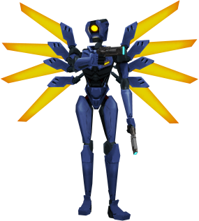
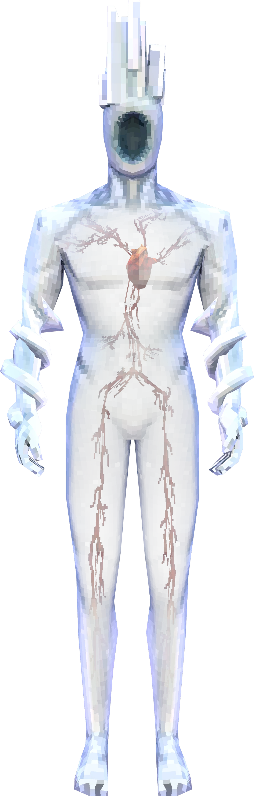
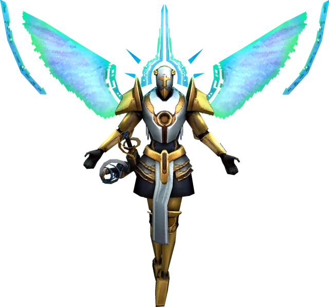

<!DOCTYPE html>
<!--Declara el tipo de documento. Indica al navegador que usara HYML5-->
<html lang="es">

</html>
<!--Elemento principal del documento HTML. lang="es" indica que el contenido esta en "español"-->

<head> <!-- Seccion de configuracion del documento -->
    <meta charset="UTF-8">
    <!-- Define la condificacion de caracteres. UTF-8 permite usar correctamente tildes, ñ, simbolos, etc -->
    <meta name="viewport" content="width=device-widthd, initial-scale=1.0">
    <!-- Hace que el sitio sea responsive. permite que el diseño se adapte correctamente a celulares y a tablets -->
    <title>practicando HTML - ing y video</title>
    <meta name="author" content="Axel Escobar">
    <!-- indica quien creo el sitio web -->

    <link rel="stylesheet" href="static/css/style.css">
    <!-- Conexion con hoja CSS de estilos-->
</head>

<body>
    <header> <!--Encabezado del documento-->
        <h1>sitio multimedia personal</h1>
    </header>
    <hr> <!-- Crea una linea de division -->
    <main> <!--- Seccion principal del documento -->
        <h2> Mis datos: </h2>
        <p> Nombre: Axel Escobar <br> <!-- br es un salto de lineaqr-->
            Curso: 3ºC
        </p>
        <hr>
        <h2> Galeria multimedia </h2>
        <p> Imagen de ejemplo </p>
        
        
        
        <hr>
        <h2>Video</h2>
        <video width="500" controls>
            <source src="static/video/video1.mp4" type="video/mp4">
            <source src="static/video/video2.mp4" type="video/mp4">
        </video>
    </main>
    <footer>
        <p style="text-align: center;">todos los derechos reservados
            - <a href="https://ultrakill.fandom.com/wiki/Home">Mas informacion</a><!--etiqueta <a> para vinculos-->
        </p>
    </footer>
</body>

</html>
